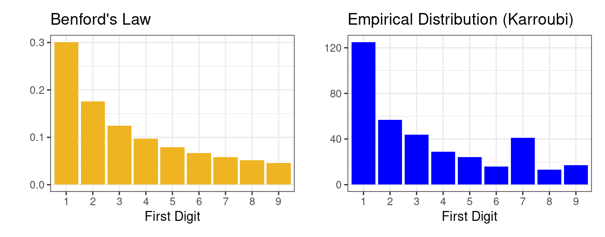
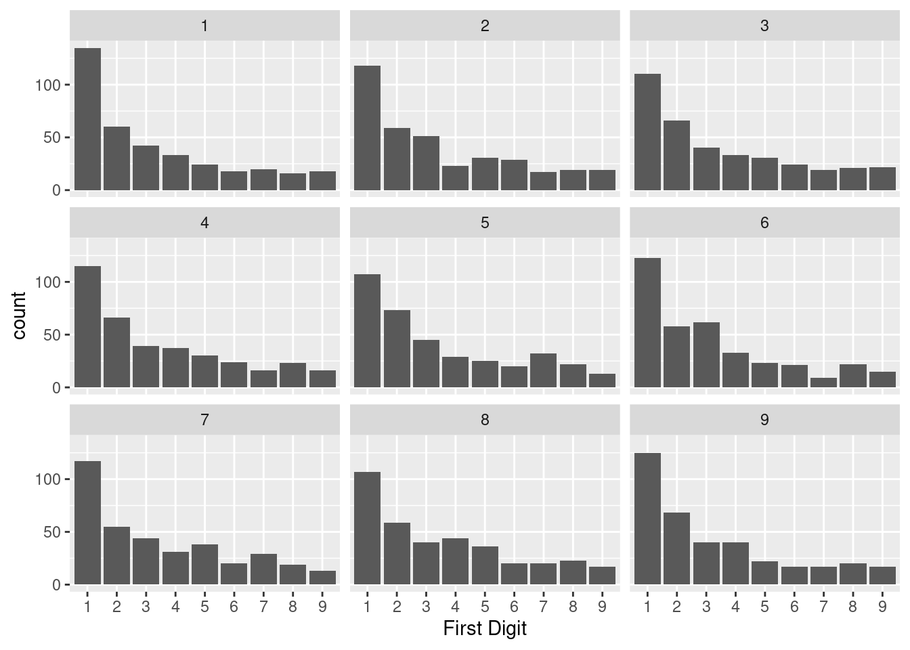
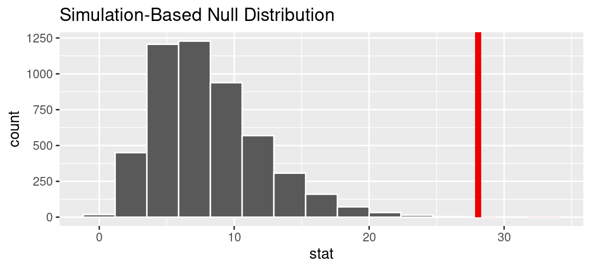

Hypothesis Tests II
Simulating the null by taking draws
Hypothesis tests are a tool for assessing the consistency between data and a proposed model for how the data was generated. There are myriad hypothesis tests, but they all follow the same basic structure.
- Assert a model for how the data was generated (the null hypothesis)
- Select a test statistic that bears on that null hypothesis (a mean, a proportion, a difference in means, a difference in proportions, etc).
- Approximate the sampling distribution of that statistic under the null hypothesis (aka the null distribution)
- Assess the degree of consistency between that distribution and the test statistic that was actually observed (either visually or by calculating a p-value)
In the last set of notes, we learned about one tool for step 3: shuffling. When the null hypothesis asserts that two variables have nothing to do with one another, then we can simulate other possible data sets by shuffling one of the columns. This approach, called a permutation test, is useful when one of the variables defines two groups. In the case of Kristen Gilbert, shuffling allowed us to simulate worlds where deaths in the ward were just as likely as not to fall into the group of shifts when Gilbert was working.
In these notes, you’ll learn a method for simulating data that corresponds to a different class of null hypotheses. The method will look familiar: it can be thought of as another version of the box model we used for random variables. Also familiar is our first example: Benford’s Law and voting data from Iran.
Test of Many Proportions
2009 Presidential Election in Iran
In 2009, Iran held a presidential election where the incumbent, Mahmoud Ahmadinejad, faced three challengers, Mohsen Rezai and two allied members of the reformist opposition, Mehdi Karroubi and Mir-Hussein Mousavi1. Leading up to the elections, polling for Mousavi and Karroubi was strong; they were considered to present the first serious challenge to Ahmadinejad’s governance. When the results of the election came in, any hopes for an upset were dashed by an decisive victory for the incumbent: Ahmadinejad received 62.6% of votes cast, Mousavi 33.75%, and Karroubi a bit above 1%.
Protests broke out among the supporters of Mousavi and Karroubi, alleging that the results were fraudulent and manipulated by the incumbent to remain in power. The protests grew into the largest ever seen in the Republic of Iran and drew the attention of governments, journalists, and election watchers from across the world. One of these watchers, working from Poland, conducted an analysis that purported to find irregularities in the voting data2. They applied to the data a controversial analytical approach: Benford’s Law.
Benford’s Law
Benford’s Law is a mathematical law that describes a particular distribution of the digits 1 through 9. It is often a good approximation for the distribution of the first digits in sets of naturally occurring numbers that span many orders of magnitude, for example in the population counts of cities. According to Benford’s Law, the most common first digit should be a 1, at a frequency of 0.3, followed by 2 at 0.18, and decreasing until 9 at 0.05.
This pattern has been thought to apply to the first digit counts of voting data as well. The theory is that if the voting process is fair, then the distribution of the first digit of vote counts across different municipalities should follow Benford’s Law. Fraudulent activity such as ballot-stuffing, would materialize as deviations from Benford’s Law.
The election watchers studying the voting data from Iran noticed an anomaly in the distribution of first digits of vote counts for Karroubi (above right). The digit 7 was unexpectedly common, far more common than would be expected based on Benford’s Law. Is this evidence of voter fraud? Could this anomaly be just be due to chance?
Taking Draws from the Null
One way to frame this analysis is as a hypothesis test. Under the null hypothesis, the first digit distribution of Karroubi’s vote counts was generated according to Benford’s Law. We can state this in the language of parameters, where \(p_i\) is the probability that a vote count has \(i\) as the first digit.
\[H_0: p_1 = .301, p_2 = .176, p_3 = .125, p_4 = .097, p_5 = .079, p_6 = .067, p_7 = .058, p_8 = .051, p_9 = .046\]
The alternative hypothesis is that the first digits were drawn according to a different distribution (at least one of the \(p_1\) is different).
This null hypothesis describes everything we need to simulate the sort of data that we would observe in a world where first digits are drawn accordng to Benford’s Law. For this simulation, we can use the metaphor of a box with tickets. In our box we place 1000 tickets. 301 of them have the number 1 on them, 176 of them have the number 2, and so on until the 46 tickets that have the number 9. We can simulate one first digit from the vote count of one municipality by drawing a single ticket with replacement. To simulate a process akin to the voting data from Iran, we would draw 366 tickets with replacement, one for each municipality.
While we could indeed do this process by hand (sacrificing both index cards and time), we will opt instead to use a computer. Below are nine different first digit distributions that we might see in a world where the first digits follow Benford’s Law.
library(infer)
p_benfords <- c("1" = log10(1 + 1/1),
"2" = log10(1 + 1/2),
"3" = log10(1 + 1/3),
"4" = log10(1 + 1/4),
"5" = log10(1 + 1/5),
"6" = log10(1 + 1/6),
"7" = log10(1 + 1/7),
"8" = log10(1 + 1/8),
"9" = log10(1 + 1/9))
set.seed(30)
draw_9 <- iran |>
specify(response = first_digit) |>
hypothesize(null = "point", p = p_benfords) |>
generate(reps = 9, type = "draw")
draw_9 |>
ggplot(aes(x = first_digit)) +
geom_bar() +
facet_wrap(vars(replicate)) +
labs(x = "First Digit")
We can see that there is some natural variation in the distribution just due to chance. While the first sample of 366 digits follows the decaying shape of Benford’s Law quite closely, the sixth has an unusually large number of 3s. The fifth sample, like the observed sample of Karroubi’s, has an unusually large number of 7s.
At this point, we could conduct a very informal version of a hypothesis test. Does the empirical distribution of Karroubi’s first digits look like one of these nine distributions generated according to Benford’s Law? It’s hard to say; the observed distribution is different from Benford’s Law. But how different is different enough?
A Distance Statistic: \(\chi^2\)
When we discern a particular structure in a plot, we can quantify it precisely by calculating an appropriate summary statistic. If we’re looking at two box plots that are shifted from one another, we can calculate a difference in medians. If we’re looking at a scatter plot with a linear association, we can calculate a correlation coefficient.
Here, the structure that we’re considering is the difference between two bar charts: the distribution according to Benford’s Law (above left) and the empirical distribution of Karroubi’s first digts (above right). There are several different statistics that could collapse this visual information into a single number. The most commonly used is the chi-squared statistic.
- Chi-squared Statistic
- A statistic used to measure the distance between two categorical distributions, one observed and one expected. For a distribution with \(k\) categories, \(O_i\) observed counts in each category, and \(E_i\) expected counts, \[\chi^2 = \sum_{i=1}^k \frac{\left(O_i - E_i \right)^2}{E_i}\]
In our setting, index \(i\) refers to each of the 9 digits. We could find the first term in the sum by taking the difference between the observed count of 1s, \(O_1 = 125\), and the count we would expect if those 366 digits followed Benford’s Law, \(E_1 = 366 \times .301 = 110.166\). That difference \(O_1 - E_1 = 125 - 110.166 = 14.834\) captures the difference in the heights of the bars corresponding to 1 in the two bar charts. To complete that first term in the sum, we square it (to treat negative differences the same as positive differences) and then we divide that by \(E_1\) (so that the squared differences are relative to the height of that particular bar).
This process is repeated for each of the 9 digits, then the result added up to a single statistic. We’ll save the tedious arithmetic and let R calculate the chi-squared statistic that corresponds to Karroubi’s first digit distribution.
obs_stat <- iran |>
specify(response = first_digit) |>
hypothesize(null = "point", p = p_benfords) |>
calculate(stat = "Chisq")[1] 28.083228! That tells us that the distance from Karroubi’s distribution to Benford’s Law was 28! But . . . is 28 a lot? Or or a little? We don’t have any natural scale on which to make meaning out of this statistic.
We can however, compare this statistic to the statistics we would see in a world where the null hypothesis is true. Here are the chi-squared statistics for each of the 9 distributions above. Look through them one-by-one: what sort of chi-squared statistic do you get for distributions that are very similar to Benford’s? What about for ones that look different?
| replicate | stat |
|---|---|
| 1 | 9.517228 |
| 2 | 8.122086 |
| 3 | 3.235929 |
| 4 | 3.647709 |
| 5 | 10.673920 |
| 6 | 17.632670 |
| 7 | 9.761574 |
| 8 | 6.901445 |
| 9 | 8.396731 |
This mode of thinking allows us to put our observed statistic of 28.1 into context. It is quite a bit larger than any of the nine statistics that we generated in a world where the first digits followed Benford’s Law. To be more thorough in our reasoning, though, we need to look at more than just nine statistics. We need to look at a full distribution of them.
Approximating the null distribution
We can repeat the simulation process used above 5000 times and, for each of the 5000 simulated data sets, calculate a chi-squared statistic. Those 5000 statistics form a null distribution.
null <- iran |>
specify(response = first_digit) |>
hypothesize(null = "point", p = p_benfords) |>
generate(reps = 5000, type = "draw") |>
calculate(stat = "Chisq")
null |>
visualize() +
shade_p_value(obs_stat, direction = "right")
We see that, in a world where first digits follow Benford’s Law, while we would expect statistics around 8 or 9, it is possible to observe very small chi-squared statistics near zero and ones as high as about 20. The statistic that we actually observed was 28.1, indicated by the red line. On the scale of the null distribution, this is off the charts.
We can quantify the consistency between the observed statistic and the null hypothesis by calculating a p-value. Formally, it is estimated as the proportion of simulated null statistics that are as extreme or more so than the one that you observed. In this case, there are no statistics that matched or exceeded 28.1, so the p-value is essentially zero.
Evidence of what?
A low p-value indicates that our data - Karroubi’s official vote data out of Iran - is inconsistent with our null hypothesis - that Karroubi’s first digit counts follow Benford’s Law. But what does that say about election fraud?
The controversy around the application of Benford’s Law in situations like this centers on whether or not a fair election would actually be expected to generate first digits that look like Benford’s Law. Benford’s Law is a simple mathematical abstraction and elections are very particular things, with each one unfolding according to different policies and procedure, and each one aggregated at different levels (precincts, cities, counties, etc.).
If you repeat this analysis on first digit distributions from US elections, you’d find that some of them follow Benford’s Law very well. Others found deviations even more extreme than seen in Karroubi’s data. US election, for the most part are free of the sort of fraud that would show up in these analyses, so the appropriate conclusion is not that we detected evidence of fraud but rather that Benford’s Law simply isn’t a good fit for many of the processes that generate vote counts in elections.
This is an important lesson moving beyond descriptive statistics and into generalizations. When you lay out the null hypothesis, you are describing a complicated real world process with a simplified explanation. The success of that generalization depends in large part on the degree to which this simplification preserves the most important features of reality3.
One Tail or Two?
In the United States vs. Kristen Gilbert, the null hypothesis that the statisticians operated under was that Gilbert was innocent. More specifically, it asserted that the occurrence of a death on a shift at the hospital was independent of whether or not Gilbert was working. This hypothesis can be stated in terms of parameters; that the probability of a death on a shift with Gilbert present is equal to the probability of a death on a shift without her present.
- \(H_0\): \(p_{gilbert} - p_{no\,gilbert} = 0\)
There are actually three different ways that the statisticians could have set up their alternative hypotheses.
- \(H_A\): \(p_{gilbert} - p_{no\,gilbert} < 0\)
- \(H_A\): \(p_{gilbert} - p_{no\,gilbert} \ne 0\)
- \(H_A\): \(p_{gilbert} - p_{no\,gilbert} > 0\)
The first version seems surprising: we’re entertaining an alternate explanation where in fact fewer deaths would have occurred on Gilbert’s shifts. The second version is the one that we used in the previous notes: that it’s possible either more or fewer deaths occurred on Gilbert’s shifts.
The third version is very tempting. It disregards the extra alternative (that Gilbert could be associated with fewer deaths) and that seems natural since the data pointed in the opposite direction. However, there are two dangers if we ignore possibilities that disagree with our data or that conflict with our world view:
Framing an alternative hypothesis simply to match the direction that the data point will inflate the type I error rate. After all the work we have done (and will continue to do) to rigorously control the error rates in hypothesis tests, careless construction of the alternative hypotheses can disrupt that hard work.
If we only use alternative hypotheses that agree with our worldview, then we are going to be subjecting ourselves to confirmation bias, which means we are looking for data that supports our ideas. That’s not very scientific, and we can do better!
The alternative hypotheses found in 1) and 3) define what are called one-sided hypothesis tests (also called “one-tailed”) because they only explore one direction of possibilities. Such hypotheses are appropriate when we are exclusively interested in the single direction, but usually we want to consider all possibilities. A better approach is to use two-sided hypothesis tests (also called “two-tailed”), defined by hypotheses in the form of 2).
The chi-squared test used for the Iran elections is an unusual case where the one-sided test is appropriate. The left tail of that distribution contains statistics that indicate strong consistency with the null hypothesis, so only the right tail is used to calculate the p-value.
The Significance Level
If it is necessary to make a binary decision based on a p-value, it must be decided beforehand what level of evidence is needed before you would rule out the null hypothesis.
- Significance level, \(\alpha\)
- A number between 0 and 1 that serves as the threshold for the p-value. The null hypothesis is rejected when the p-value \(< \alpha\), and the finding is found “statistically significant”.
By convention, \(\alpha = 0.05\), however you should adjust the significance level based on the application. Certain scientific fields might tend to use a slightly higher or lower threshold for what constitutes statistical significance. In a setting where the decisions have very different real-world consequences, those, too, can factor into the choice of \(\alpha\).
Summary
In these notes you learned about a second form of null hypothesis, one where you explicitly define the proportions of a categorical variable. This type of null hypothesis allows you to generate data through simulating the process of drawing tickets from a box that is designed to match your null hypothesis. The most common test statistic used in this scenario is the chi-squared statistic, which measures the distance between two categorical distributions. Just as in the permutation tests from last time, you can assess the consistency between the null hypothesis and your data by calculating a p-value: the probability of drawing a statistic as or more extreme than the one that you observed in a world where the null hypothesis is true.
Footnotes
Image from Pyvand Iran News archives http://www.payvand.com/news/09/jun/1085.html.↩︎
Roukema, Boudewijn F. (2014). “A first-digit anomaly in the 2009 Iranian presidential election”. Journal of Applied Statistics. 41: 164–199.↩︎
For more conversation around the application of Benford’s Law to the election in Iran (and elections in general), see a blog post by Andrew Gelman, a professor of statistics at Columbia University: Unconvincing (to me) use of Benford’s law to demonstrate election fraud in Iran.↩︎